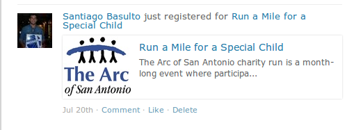
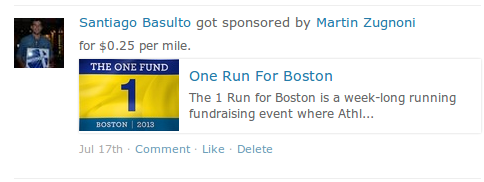

GET /post/[id]/
Arguments - None
Example Response
{
"author": {
"first_name": "Dustin",
"id": 1,
"last_name": "McQuay",
"preferences": "/api/v1/preferences/1/",
"profile": "/api/v1/profile/1/",
"resource_uri": "/api/v1/user/1/"
},
"body": "What a great run!",
"comment_count": 0,
"created_date": "2012-05-17T11:31:22.492757",
"id": 3,
"likers": [1, 2],
"resource_uri": "/api/v1/post/3/",
"workout": {
"distance_in_meters": "3862.43",
"duration_in_seconds": 1380,
"id": 2,
"resource_uri": "/api/v1/workout/2/",
"run_date": "2012-05-17T00:00:00",
"run_type": "Interval",
"title": "Running"
}
}
We’ve built some custom pagination for browsing posts. The way pagination works is through specifying a temporal ordering of the posts. It means that you can ask for posts “earlier than” post n° 1001, or posts later than post n° 289.
By default you get a list of posts 20 posts. For example, from post id n° 40 to post n° 20. If you want to browse more posts you can ask for posts earlier than 20, or posts later than 40. Here are the parameters you can specify in your URL in order to get pagination working:
earlier_than: A post ID. later_than: A post ID. limit: The amount of posts.
GET /post/
Arguments
type: [ friends | local | featured | profile ] A special filter to get posts for a user’s dashboard, local posts, featured posts or the profile feed posts. The value “dashboard” is also valid, but is deprecated. It has the same effect as “friends”. fallback: [ 1 | 0 ] Defaults to 0. If set to 1, an empty feed will fallback to a more broad feed. “friends” falls back to “local” which falls back to “featured”. This prevents you from having to make as many as 3 requests to handle fallbacks yourself. When using fallback, check the response (meta.feed_type) to find out what type of feed is being returned to you. user_id: Only valid when type is dashboard or profile. Specifies the id of the user who’s dashboard posts should be returned. limit: Max feed items to return (default=20) earlier_than: A post id. Tells the API to return posts that are older than the post with this id. later_than: A post id. Tells the API to return posts that are newer than the post with this id.
Response
You’ll get a list of post objects. It will be paginated.
It is very possible that the user specified has provided a location in their settings that we were unable to resolve to get a latitude and longitude. Without that, we cannot determine who is “local” to them. In this case you will get a normal response with 0 results.
Example Response
{
"meta": {
"newer": "/api/v1/post/?later_than=40&limit=20",
"older": "/api/v1/post/?limit=20&earlier_than=24",
"feed_type": "featured"
},
"objects": [
{
"author": {
"first_name": "Dustin",
"id": 1,
"last_name": "McQuay",
"preferences": "/api/v1/preferences/1/",
"profile": "/api/v1/profile/1/",
"resource_uri": "/api/v1/user/1/"
},
"body": "What a great run!",
"comment_count": 0,
"created_date": "2012-05-17T11:31:22.492757",
"id": 3,
"likers": [
1
],
"resource_uri": "/api/v1/post/3/",
"workout": {
"distance_in_meters": "3862.43",
"duration_in_seconds": 1380,
"id": 2,
"resource_uri": "/api/v1/workout/2/",
"run_date": "2012-05-17T00:00:00",
"run_type": "Interval",
"title": "Running"
}
},
{
"author": {
"first_name": "Dustin",
"id": 1,
"last_name": "McQuay",
"preferences": "/api/v1/preferences/1/",
"profile": "/api/v1/profile/1/",
"resource_uri": "/api/v1/user/1/"
},
"body": "",
"comment_count": 0,
"created_date": "2012-05-17T11:30:35.241416",
"id": 2,
"likers": [
1
],
"resource_uri": "/api/v1/post/2/",
"workout": {
"distance_in_meters": null,
"duration_in_seconds": 3600,
"id": 1,
"resource_uri": "/api/v1/workout/1/",
"run_date": "2012-05-17T00:00:00",
"run_type": "Endurance",
"title": "Running"
}
}
]
}
DELETE /post/[post_id]/
Arguments
post_id: The id of the post you want to delete. The post must belong to your user, in other case you’ll get a 404.
Response
204 No content.
In order to upload a picture to a post (or to its relative workout) you should issue a POST request similar to this. As always, it’s very important to specify the correct content type:
POST /picture/?post_id=[id]
| post_id: | The id of the post you want to attach that picture to. |
|---|
Response:
201 Created
Headers:
You must specify the content type of the image. The content types allowed are: “image/jpeg” and “image/png”.
It’s as simple as:
GET /picture/?post_id=[id]
There you’ll get 4 sizes:
thumbnail: Size 140 x 110 aprox. feed: 400px wide aprox. detail: 900px wide aprox. original: The original picture, we don’t make any changes to the picture.
Some posts have extra information. That’s because you might want to provide a richer experience for the user. Some type of Post types that have extra information are detailed below:
The user registered for an event. This is how it looks in the site:
This is an example of the JSON data you get:
{
"author": {
"email": "sanbasulto_04@hotmail.com",
"first_name": "Santiago",
"last_name": "Basulto",
...
},
"body": "Santiago Basulto just registered for Run a Mile for a Special Child http://test.athlete.com/events/5/run-a-mile-for-a-special-child/promo",
"extra": {
"event_logo": "https://com-athlete-testing-static.s3.amazonaws.com/media/event_logos/asUzhUYjmC8hQtpwLeCBYm.gif",
"event_name": "Run a Mile for a Special Child",
"home_url": "http://test.athlete.com/events/5/run-a-mile-for-a-special-child",
"info_url": "http://test.athlete.com/events/5/run-a-mile-for-a-special-child/promo",
"participant_page_url": "http://test.athlete.com/events/participant/335/Santiago+Basulto"
},
"id": 10305,
"resource_uri": "/api/v1/post/10305/",
"post_type": "registered-for-event",
...
}
In extra you have some important info regarding the event and the body is intentionally enriched for older apps.
A user got a new sponsor for his/her event participant. This is how it looks in the site:
This is an example of the JSON data you get:
{
"author": {
"id": 11,
"email": "...",
"first_name": "Santiago",
"last_name": "Basulto",
...
},
"body": "Santiago Basulto just got sponsored by Martin Zugnoni for One Run For Boston. http://test.athlete.com/events/4/one-run-for-boston/promo",
"extra": {
"amount_per_mile": "0.2500",
"event_logo": "https://com-athlete-testing-static.s3.amazonaws.com/media/event_logos/KycD4Yo3m98mcvcNSPRY3C.png",
"event_name": "One Run For Boston",
"home_url": "http://test.athlete.com/events/4/one-run-for-boston",
"info_url": "http://test.athlete.com/events/4/one-run-for-boston/promo",
"participant_page_url": "http://test.athlete.com/events/participant/328/Santiago+Basulto",
"sponsor_name": "Martin Zugnoni"
},
"id": 10304,
"resource_uri": "/api/v1/post/10304/",
"post_type": "event-participant-got-sponsor",
...
},
In extra you have some important info regarding the event and the body is intentionally enriched for older apps.